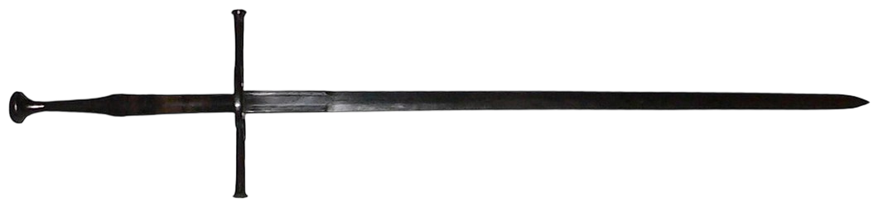

A sword is an edged, bladed weapon intended for manual cutting or thrusting. Its blade, longer than that of a knife or dagger, is attached to a hilt and can be straight or curved. A thrusting sword tends to have a straighter blade with a pointed tip. A slashing sword is more likely to be curved and to have a sharpened cutting edge on one or both sides of the blade. Many swords are designed for both thrusting and slashing. The precise definition of a sword varies by historical epoch and geographic region. Historically, the sword developed in the Bronze Age, evolving from the dagger; the earliest specimens date to about 1600 BC. The later Iron Age sword remained fairly short and without a crossguard. The spatha, as it developed in the Late Roman army, became the predecessor of the European sword of the Middle Ages, at first adopted as the Migration Period sword, and only in the High Middle Ages, developed into the classical arming sword with crossguard. The word sword continues the Old English, sweord.
